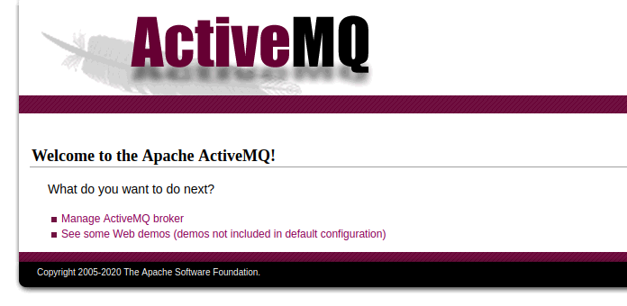
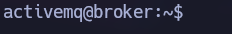

Linux · Laboratorio
Broker
Acceso mediante ActiveMQ y abuso de Nginx ejecutado con sudo.
ActiveMQ · Nginx
Reconocimiento de ActiveMQ
Nmap nos devuelve bastantes puertos abiertos. Empiezo por la web, que pide usuario y contraseña nada más cargar. Probamos admin:admin y podemos entrar al panel de ActiveMQ.

Revisando el panel encontramos la versión 5.15.15. Busco información sobre ella y llego a una prueba de concepto en Go que utiliza un XML alojado en nuestro servidor para ejecutar comandos.
El puerto era la clave
Preparamos poc-linux.xml con nuestros datos y lanzamos el script. Al principio lo apunto al puerto 80 y no recibo la shell. Leyendo mejor cómo funciona, veo que la explotación va contra el servicio de mensajería, en el puerto 61616, que también estaba abierto. Cambiamos el puerto y volvemos a probar. Esta vez sí nos llega la reverse shell.

Nginx con permisos de root
Dentro de la máquina, sudo -l nos muestra que podemos ejecutar /usr/sbin/nginx como root. Podemos aprovecharlo para levantar un servidor con una configuración propia y leer archivos a los que nuestro usuario no tiene acceso. Creamos en /tmp un archivo de configuración que utiliza user root, escucha en el puerto 7777 y sirve / con el listado de directorios activado.
user root;
worker_processes auto;
pid /run/nginx2.pid;
include /etc/nginx/modules-enabled/*.conf;
events { worker_connections 1024; }
http {
server {
listen 7777;
location / {
root /;
autoindex on;
}
}
}Lo arrancamos con sudo /usr/sbin/nginx -c /tmp/pwnd.conf. Accediendo al nuevo servicio podemos recorrer el sistema de archivos y leer el contenido de /root.